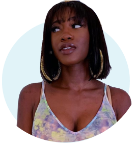
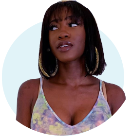

In a time when influencers are entangled in beauty wars and #sponcon reigns supreme, it can be hard to cut through all the noise. Instagram's move to remove likes and recent changes in social media engagement—not to mention countless lawsuits—often make it seem as though the bubble is ready to burst. But there's one influencer who's staying solely focused on the messages that matter: Jackie Aina.
The 32-year-old social media star isn’t afraid to tell it like it is. Her blunt beauty commentary, as well as her sense of humor and infectious personality, have earned her more 3 million subscribers on YouTube and 1.2 million followers on Instagram. From singing her “Jackie” theme to referencing memes left and right, she films videos that are impossible to watch without cracking a smile. While she started her channel with a traditional tutorial style, she really hit her stride when she let her personality shine through. “I just thought, What if people really got to see how weird and crazy I am?” she told Glamour last year, looking back on her hilarious "Makeup Trends We're Ditching in 2019" video. "Honestly, I never expected it to get the reach that it did, but it went like, viral viral.”
Aina brings an unparalleled joy to a space that can sometimes devolve into pettiness and drama. Instead of engaging in the internet's prevalent call-out culture, she voices her thoughts with the intent to create change.
class="pic1"This has included calling out brands when they aren't being inclusive, holding other influencers accountable, and addressing colorism in the industry with conviction.
“I truly mean this wholeheartedly, whenever I talk about brands, I want them to actually implement that feedback and use it to their benefit,” says Aina, who continues to actively push for beauty brands to be more inclusive. And when she talks, brands listen.
In early 2018, Tarte launched its highly anticipated Shape Tape Foundation with a relatively small range of 15 shades, only three of which could be considered deep. They were all too orange for Aina to use. “I don’t appreciate the blatant erasure of a whole spectrum of people. It doesn't even look like they tried,” she said in her video review of the launch.
Tarte got the message loud and clear. Instead of adding more shades as planned, the brand completely relaunched the foundation as Face Tape earlier this year and more than doubled the range to include 50 shades. Aina didn’t review the new launch, but the consensus online was that it was the right move.
Now, more than decade in to social media stardom, Aina is working behind the scenes with brands to ensure their products cater to all. Her biggest partnership to date includes the Estée Lauder-owned Too Faced, which she teamed up with last summer to extend the brand's Born This Way Foundation shade range. The partnership continues with this summer’s Super Coverage Concealer, which includes the same nine foundation shades Aina worked on last year, after interviewing dozens of people and testing the results on herself and friends. Too Faced declined to share sales data, but the announcement was an instant hit. And Aina’s personal shade, Chai, quickly became the brand’s best-selling shade.
"I realized I needed to call somebody, not only that I completely respect and trust, but somebody that I love enough to sit in my throne and really lead me and guide me down this road," says Jerrod Blandino, Too Faced’s cofounder and chief creative officer. Aina was the only one for the job. "It's about doing the right thing," he tells Glamour.
"Jackie's at the forefront of changing that for us—for the world."
The pair’s partnership goes back further than the foundation collaboration; Aina previously swatched the brand’s lipsticks for its website so there would be visuals on darker skin tones. She also created a promo video for its Better Than Sex Mascara.
"With Too Faced, I never felt like a token,” says Aina.
“She's got that light,” says Blandino. “She has opened up doors, windows, roofs, worlds, to people who felt marginalized, who felt like they weren't seen, who felt like they didn't matter, who felt like it was impossible. She showed them that not only is it possible, it's their right."
The partnership with Blandino is just one example of how Aina has seamlessly entered every space of the industry, where influencers are sometimes still treated as a separate entity. Her collaborations with brands sell out in mere hours, and her upcoming Anastasia Beverly Hills palette—formulated especially for darker skin tones—has been trending on Twitter with over 190,000 likes. She was named Influencer of the Year by Women’s Wear Daily in 2018, the first to hold the title, as well as the NAACP’s YouTuber of the Year the same year—again as the first.
If that's not proof enough of clout she's earned herself, there's this: At a recent editor-only event for Pat McGrath, one of the industry’s most influential makeup artists, Aina was the sole influencer to appear, looking right at home as she caught up with McGrath one-on-one.
There are few individuals whom brands both deeply adore and are afraid to be called out by—a review from Aina carries enough weight to make or break a launch, and she says she often consults with brands for free. It's a task she's more than willing to undertake, knowing that there’s often a disconnect between what companies discuss at the table and what consumers of color need. “These things that happen probably could've been avoided if you had somebody from that community at the table actually saying, ‘This isn’t a good idea.’”
Not only is Aina calling on brands to do better, she also weaves necessary discussions of cultural appropriation and representation into her videos. Her viral “colorblind” makeup tutorial is evidence that viewers watch—and appreciate—content that directly addresses these issues. Aina recalls that early on in her career, a subscriber approached her and told her she had previously hesitated to wear red lipstick because her skin was too dark. But Aina, through her channel, had showed her she could feel beautiful.
“It's always the 'thank you for teaching me that dark skin isn’t punishment and isn't ugly' moments that tell me I'm doing something worthy," she says.
There's been plenty of chatter about 2019 being the end of influencers, but Aina isn't worried one bit. She thinks people are turning to accounts that make them feel seen now more than ever. “You can go online and find someone who looks like you, thinks the same way you do, had the same struggle, but got out of that," she says. "There are so many great things about that. People really want to know you holistically, especially what else you stand for.”
For Aina, the message has always been clear—and it's always been bigger than her. “What is this going to do for my community?" says Aina. "If I don't say anything, will it harm my community?” With that in mind, she keeps speaking up.
This year has made one thing clear: Women are showing up, stepping up, and taking what they deserve. From
politics to pop culture, women aren't just leveling the playing field—they're owning it. As we ramp up to our annual Women of the Year summit, we will be highlighting women across industries who do the work every day. Whether it's the CEO of a multinational retail corporation, a James Beard Award–winning chef, or the World Cup champions, here are the women you need to know right now. We've already celebrated the women in sports. Up now: 12 women who are making their mark in the world of beauty, where entrepreneurs, artists, influencers, and legislators are fighting to make the beauty industry—and our culture at large—a more inclusive, truly beautiful place.
Next article:

 
